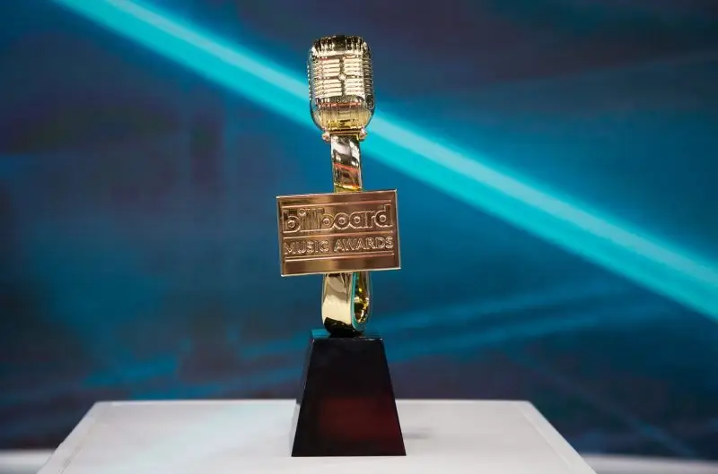

Youthanasia, lançado em 1994, trouxe o Megadeth a um novo patamar de reconhecimento mundial. Com uma sonoridade mais refinada, o álbum conquistou diversas indicações e prêmios na cena musical.
Apesar de não ter levado o Grammy, Youthanasia foi um divisor de águas para o Megadeth, mostrando sua evolução musical e alcançando um público ainda maior.
